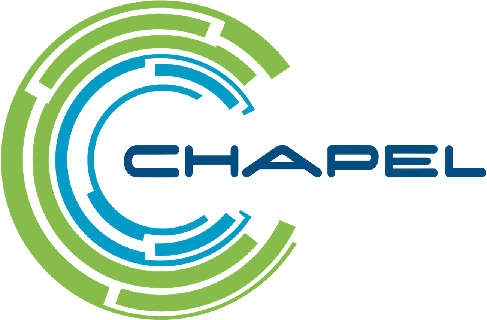
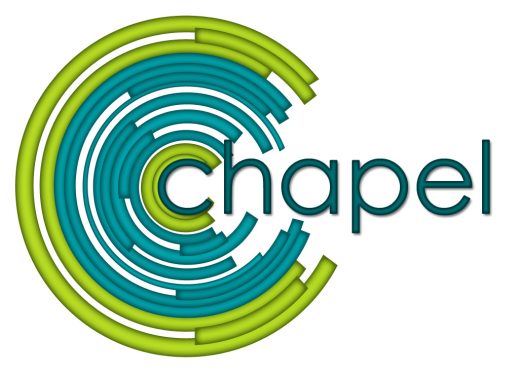
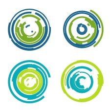
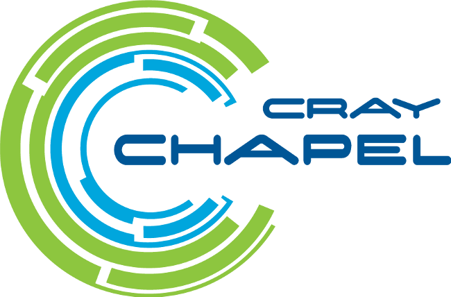

The current Chapel logo:

came about as the result of a contest that was announced to the Chapel
community and Cray Inc.'s employees in January 2011. We received
nearly 100 entries in the contest, which were rated by a panel of
judges from Cray corporate leadership and the Chapel team. The
winning entry by a large margin was the following design, submitted
by
Kristina
Davis and Timothy Stitt from the Center for Research Computing
(CRC) at the University of Notre Dame:

Their entry was inspired by the following illustration by
Oli Laurelle which appeared
in
an article in CACM:

From there, Cray's marketing department (most notably Jim Cissell)
worked from Kristina and Tim's design to visually simplify it for the
sake of reproduction at small scale, and to improve visual
recognition. The choice was made to adopt Cray's corporate typeface
to provide a nod to Chapel's origins at Cray. The Cray name was also
added, but designed to be separable to support Chapel's transition
from a Cray-centric project to a broader community effort. This
resulted in Chapel's first official logo:

When Hewlett Packard Enterprise acquired Cray in 2020, the Cray mark
was dropped, resulting in the current logo.
{kind=link}
{kind=link}
{kind=link}